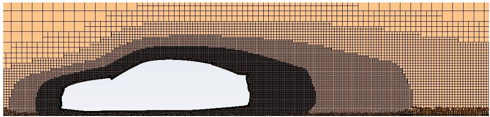

Creating mesh#
In Fluent creating a mesh consists of manz subtasks ranging from part import management, tunnel creation, edge extractions, surface mesh settings, volume mesh settings, mesh improvements, volume definisions, boundary definitions, scope sizings and prism sizings. Thankfully we need to concern ourselves only with the latter two, as most of the other tasks are managed by the script.
Scoped Sizing#
Size Functions and Scoped Sizing provide control over how the mesh size is distributed on a surface or within the volume. They provide accurate sizing information for the mesh distribution and precise refinement control.
Scoped sizing differs from size functions in how the sizing can be associated with objects or zones, respectively. Scoped sizing may be applied to model features such as faces, edges, face zone labels or unreferenced face or edge zones
Assigning Scoped Sizing#
For specifying mesh size the Scoped Sizing menu is aviable. This menu consists of the tree window on the left side, scoped sizing file loading on top of the menu, individual sizings individual sizings controlls in the middle and tree manipulation buttons on the bottom.
{kind=link}
By default there are only two entities in your scoped sizing tree - vehicle and BOIs. Under the vehicle entry all your physical formula assemblies and parts should be added. All your bodies of influence should be specified under the BOIs entry. New entry to the tree is made by clicking on already existing entry, changing the name to the name of new part and then clicking on Add Child button. This will create a new entry under the previously clicked one, which becomes the new entries parent.
Tree structure#
Tree structure should directly copy the CAD geometry tree from top level. This means that all the assemblies and part to which we need to specify a scoped sizin should be in the same position in Scoped sizing tree as in CAD tree.
{kind=link}
{kind=link}
Types of sizing controls#
When the size functions or scoped sizing is used, the mesh distribution is influenced by:
The minimum and maximum size values
The growth rate
The size source which can be any one of the following:
Edge and face curvature, based on the normal angle variation between adjacent edges or faces.
Edge and face proximity, based on the number of element layers created in a gap between edges or faces.
Growth rate#
Is defined as a rate of allowed increase of adjecent cell size. As example if growth rate of 1.4 is selected on zone where minimum of 10mm cell is located, the neighboring cells can maximally be 14mm large (10mm x 1.4) if other scoped sizing rules allow for that. Gmaller growth rate results in more gentle increase in cell size while larger growth rate results in smaller mesh.
{kind=link}
Curvature#
Normal Angle – If the angle between two neighboring face normals is larger than the “Normal Angle”, refinement will happen. Smaller “Normal Angle” means better feature capturing.
E.g. 18° will give 20 faces around the circumference of a cylinder assuming minimum size isn’t limiting
{kind=link}
Proximity#
The proximity size function/scoped control computes edge and face sizes in ‘gaps’ using the specified minimum number of element layers. For the purposes of specifying proximity sizing, a ‘gap’ is defined in one of two ways:
The area between two opposing boundary edges of a face
The internal volumetric region between two faces
{kind=link}
Body Of Influence - BOI#
BOI is used to limit the mesh size within a volumetric region where it sets maximum size. * E.g. wake refinement behind a car
BOI is applied to face zones forming a watertight volume.
{kind=link}
For more detailed info on mesh sizings see: